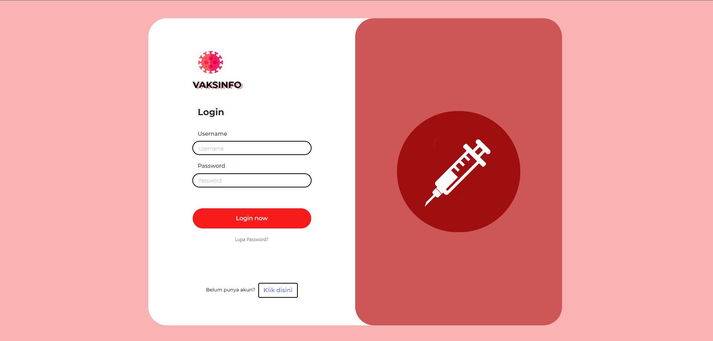
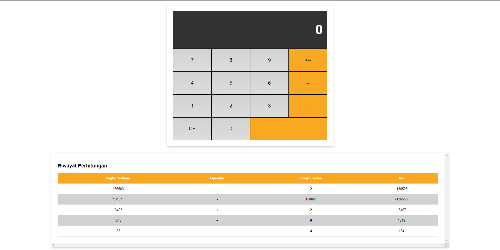
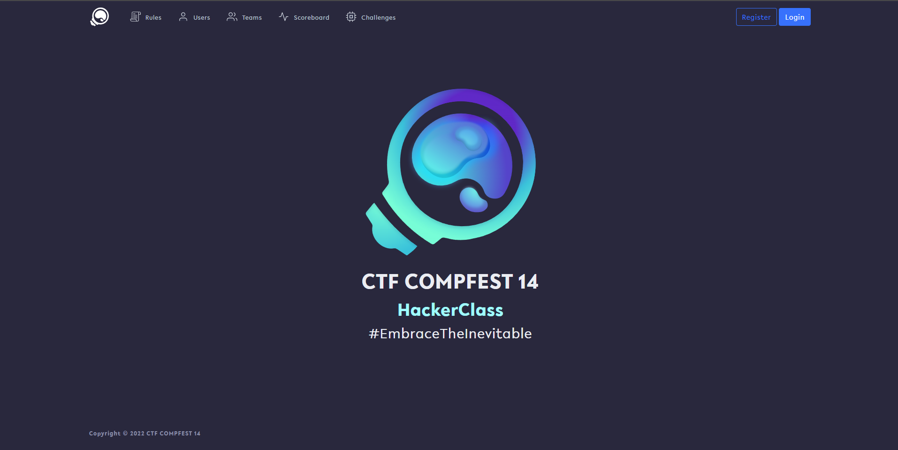

Hello, my
name is Akbar Maliki Haqoni Jati. I am a computer science student
who is interested in software engineering, web development, and
mobile development. I am currently taking semester 5 at the
university of Indonesia and am looking for experience in the field
of computer science.
SIFOST is a minimal form/survey maker with simple interface and no
bloat and other unnecessary stuff. It is aimed for anyone that
needs to collect any necessary informations for any purpose such
as for research or feedback (with consent of course).
Vaksinfo

Vaksinfo is a website that provides information for the people of
Indonesia that provides information about vaccine locations,
information about vaccines circulating in Indonesia, news articles
and tips on doing activities during the pandemic, as well as
statistics on COVID-19 in Indonesia. Vaksinfo is also equipped
with features that can be used by users to submit criticisms,
suggestions, or questions related to the website.
KalkulatorJS

CalculatorJS is a project that I created as a result of training
in "dicoding" which uses html, css, and javascript
CTFCOMPFEST14

CTF COMPFEST14 is a platform that I developed with my team to meet
the needs of CTF competitions. This platform is basically derived
from the Platform named CTFd. In this project I contribute to
changing the ui/ux platform according to the feedback given by the
user in order to provide the best experience